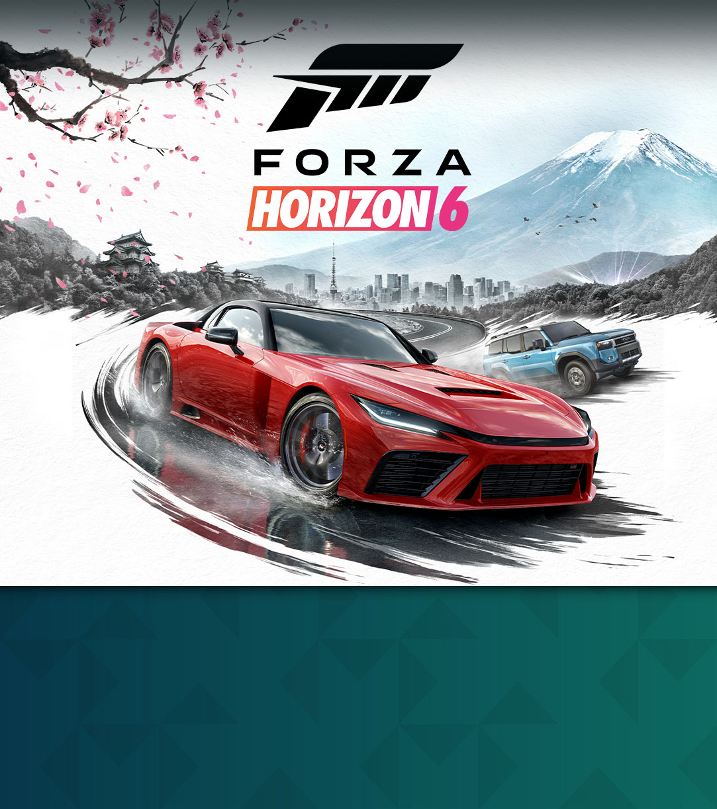

Summer Thunder is Season 1 in FH6 Japan and sets the tone for the entire year: aggressive drift events, technical touge sprints, and a focus on low-grip, high-reward challenges. If you missed previous Forza Horizon games, Summer Thunder introduces the core loop that keeps players engaged: complete weekly challenges, earn reward cars, and refine your driving skills through competitive seasonal events.
This guide covers all championship events, reward cars, and PR stunt targets for the full 7-week season. Each week introduces new challenges while maintaining the Summer Thunder theme of drift and touge racing on dry asphalt.



Championship Events
| Event Name | Type | Car Class | Track | Weekly |
|---|---|---|---|---|
| Mount Akagi Touge Sprint | Touge Race | A-S1 | Route 33 | Week 1-7 |
| Tokyo Bay Drift Championship | Drift | B-A | Bay Circuit | Week 1-7 |
| Hiroshima Coastal Sprint | Road Race | S1-S2 | Coastal Highway | Week 2-5 |
| Shibuya Street Circuit | Circuit Race | A-S1 | Shibuya Sprint | Week 3-7 |
| Kyoto Heritage Road Run | Road Race | B-S2 | Temple District | Week 4-7 |
| Yokohama Speed Challenge | Top Speed | S1-S2 | Bay Bridges | Week 5-7 |
Season 1 Reward Cars
| Reward Car | Year | Class | Drive | How to Unlock |
|---|---|---|---|---|
| Nissan Silvia K's | 1992 | A | RWD | Complete all Weekly Challenges (any 4 of 7 weeks) |
| Toyota GR Supra RZ | 2020 | S2 | RWD | Reach Gold Tier (151+ Seasonal Tokens) |
| BMW M3 Competition | 2021 | S2 | RWD | Complete 25 drift score events during Summer Thunder |
| Mazda RX-7 GT-X | 2012 | A | RWD | Finish top 3 in any Online Adventure race during Season 1 |
PR Stunt Targets
| PR Stunt | Location | Target | Recommended Car |
|---|---|---|---|
| Speed Trap — Yokohama Bay Bridge | Tokyo Region | 280 km/h | McLaren P1 / Porsche 918 |
| Jump — Mount Haruna West | Mount Region | 80 meter distance | Any off-road capable AWD |
| Drift Zone — Hakone Drift Park | Hakone Region | 20,000 point drift | Nissan Silvia / BMW M4 |
| Speed Camera — Osaka Coastal | Osaka Region | 250 km/h | Toyota GR Supra / GT-R Nismo |
| Jump — Hokkaido Snow Ramp | Hokkaido Region | 60 meter distance | Mitsubishi Evo VI / WRX STI |
Weekly Challenge Breakdown
Each week of Summer Thunder has 4 challenges in the Festival Playlist. Completing 4 out of 7 weeks qualifies you for the Silvia K's reward car. Here's the weekly cadence:
- Week 1: Drift 101 — Score 15,000 points in a single drift. Entry-level, designed to onboard beginners.
- Week 2: Touge Introduction — Complete Route 33 without resetting. Tests consistency.
- Week 3: Street Circuit Race — Win any Shibuya circuit race. Introduces city racing.
- Week 4: PR Stunt Combo — Hit a speed camera AND complete a drift zone in the same session.
- Week 5: Coastal Sprint — Complete the Hiroshima coastal run under 4 minutes.
- Week 6: Photo Challenge — Capture a sunset shot with your car at Mount Haruna viewpoint.
- Week 7: Championship Finale — Complete the Yokohama Speed Challenge. Final test of the season.
Pro Tip: Start Week 1 Immediately
Season 1 runs for 7 weeks, but players who start in Week 1 and complete every challenge have the best chance of reaching Gold Tier. Waiting until mid-season makes catching up difficult — especially for Gold Tier which requires 151+ tokens accumulated over the full season.